01The networks
- TempCNN
- Pelletier et al. (2019): one-dimensional convolutions along time. The series is read as a sequence of fixed length, so the model applies to series of the same dates.
- L-TAE
- Garnot & Landrieu (2020): a lightweight temporal attention encoder. Each date is encoded with when it was taken, and attention decides how much each date counts for the class.
- U-TAE
- Garnot & Landrieu (2021): a U-Net over each date whose levels are collapsed through time by L-TAE's attention (computed at the coarsest level, applied at every one). It reads patches of the image, so a pixel is classified with its neighbours: fields come out whole.
- Presto
- A foundation model pretrained on Sentinel-1 and -2 series worldwide; a classifier learns on its encodings. It has a guide of its own.
TempCNN and L-TAE are built as in R's sits (the same layers, sizes and defaults), and checked against sits_tempcnn and sits_lighttae on sits' own samples. They run on Burn, a Rust deep learning framework, on the GPU through wgpu (Direct3D 12, Vulkan or Metal), or on the CPU.
02The example
The Landsat 8/9 series of the CCDC guide: 125 dates, 2020 to 2026, 30 m, 1117 × 1079 pixels of Rondônia. The samples come from MapBiomas 2022 (collection 8): 250 points in each of five classes (water, urban, pasture, forest, agriculture), each at a pixel whose 5 × 5 neighbourhood is all of its class, in a GeoPackage with a class column.

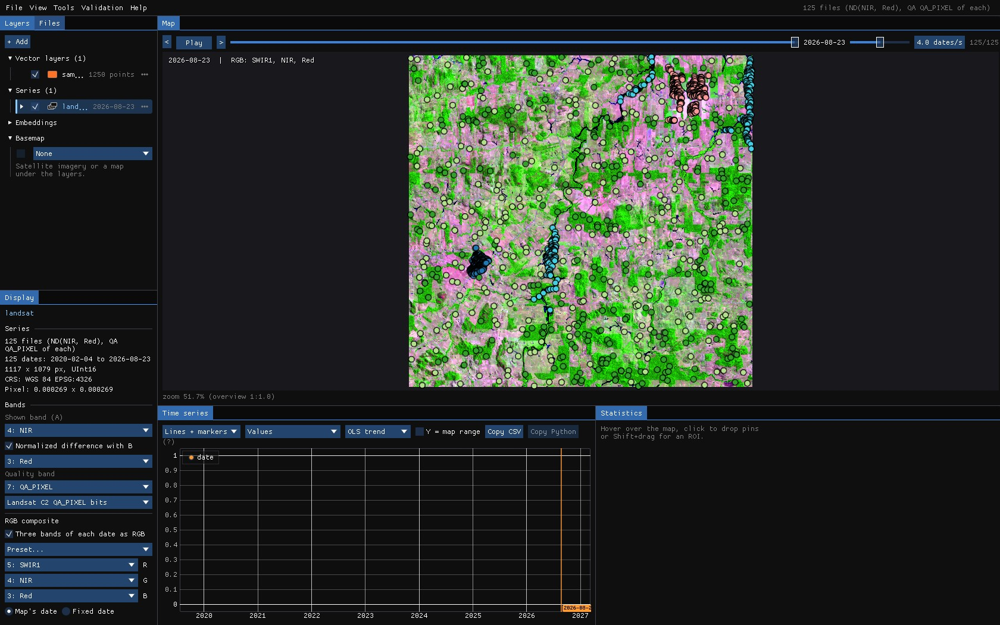
Reproduce it
python tools/make_guide_data.py labels MAPBIOMAS.tif landsat/ls_2020-02-04.tif labels makes the samples (and the areas U-TAE learns from) on the series' grid; janus --shots ml landsat out then runs this whole guide and saves these screenshots.
About the numbers
The samples sit inside large patches of one class, and the validation samples are drawn from the same set: the accuracies below show how the networks fit these samples, not how good a map of Rondônia they make. For that, validate the map with a sample of its own (Validation guide).
03The window
Tools → Classify with deep learning. The samples can come from a vector layer (points, or polygons: their centre, their pixels or their mean), an interpretation going on, a validation project, pins given a class, or a class map (for U-TAE). The window counts them by class as you choose.

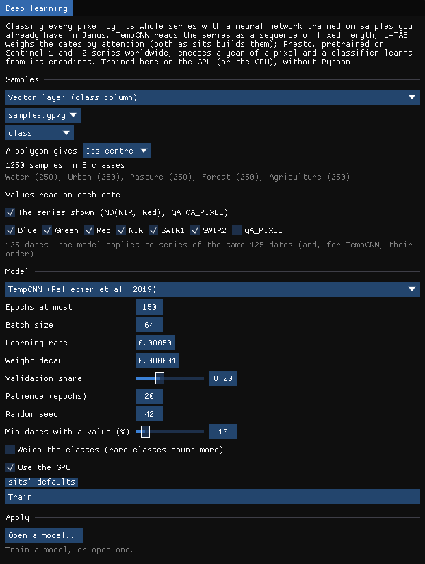
| Setting | TempCNN | L-TAE | What it does |
|---|---|---|---|
| Values read on each date | the series shown | The band or index on the map, and any bands of each date: here NDVI, blue, green, red, NIR, SWIR1, SWIR2 (7 values × 125 dates). | |
| Epochs at most | 150 | 150 | Passes over the training samples. |
| Batch size | 64 | 128 | Samples a step (lowered so that an epoch has at least 8 steps). |
| Learning rate | 0.0005 | 0.0005 | AdamW's step (TempCNN's decays by 5% each epoch, as in sits). |
| Weight decay | 1e-6 | 7e-4 | AdamW's regularization. |
| Validation share | 0.2 | 0.2 | Samples kept out of the training, by class, to choose the best epoch and report the accuracy. |
| Patience | 20 | 20 | Stops when the validation loss has not improved for this many epochs; the best epoch is kept. |
| Min dates with a value (%) | 50 | Samples (and pixels) with values on fewer dates are left out; the gaps of the others are filled linearly in time. | |
| Weigh the classes | off | Rare classes count more in the loss. | |
The quality band leaves this series with few clear dates in the rainy season: at the default of 50%, only one of the 1250 samples is kept, and the window says so. The guide lowers Min dates with a value to 10%.
04Training
Train. The window draws the loss and the accuracy of every epoch, on the training samples and on the validation samples, as they come.

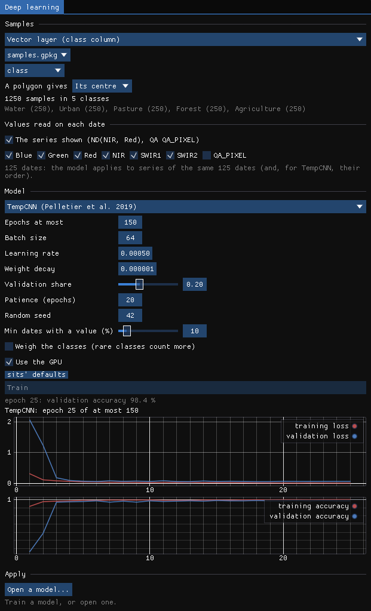

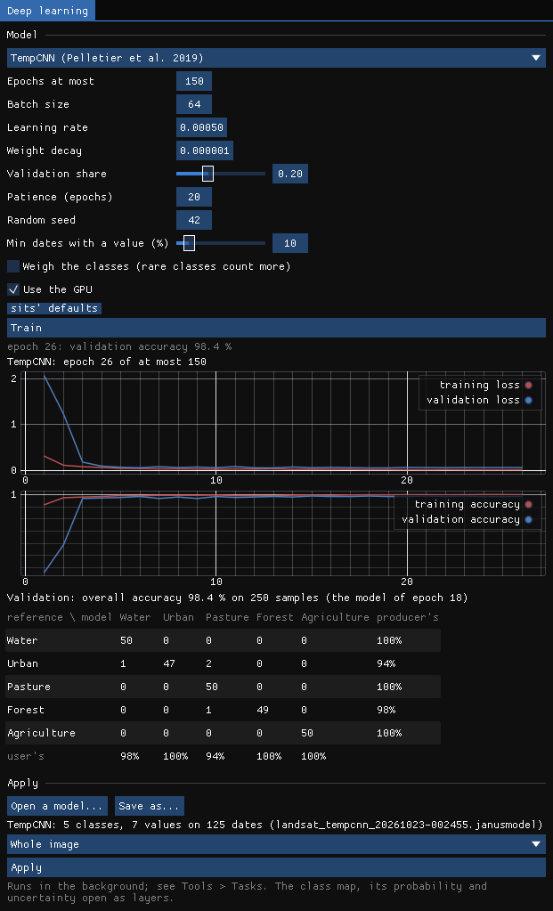
TempCNN trained in 9 seconds on an RTX 3060: 1000 training samples, 26 epochs, stopped early, the model of epoch 18 kept. On the 250 validation samples its overall accuracy is 98.4%. Two urban samples were taken for pasture and one for water, one forest sample for pasture.
05The class map
The trained model is the one to apply: Apply on the whole image classifies 1.2 million pixels in rows, in the background, in 78 seconds.
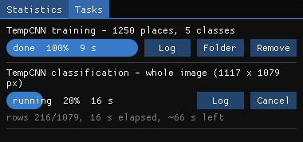

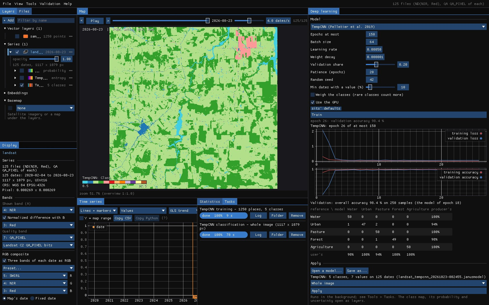
Each run makes three maps, opened as layers: the class, the probability the network gives it, and the uncertainty, the entropy of the probabilities of every class (0 when the network is sure).

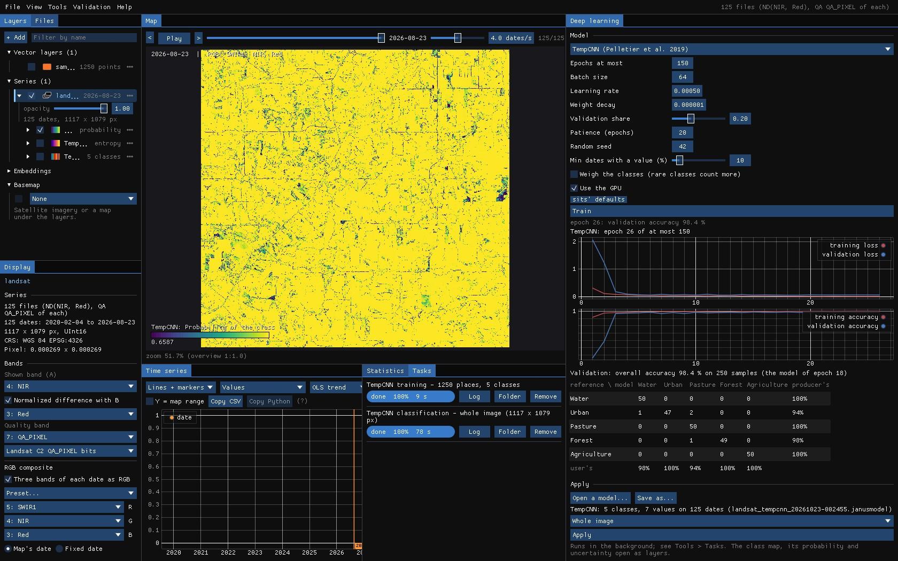

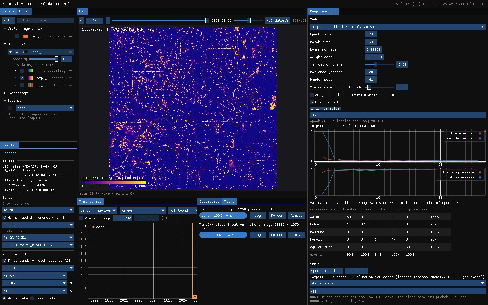
The uncertainty points at what the samples did not cover: roads, the edges between forest and pasture, fields cleared during the series. That is where to add samples, or to look first when validating.
06L-TAE
Choose L-TAE in Model: the settings change to sits' defaults for it, and Train again on the same samples. It trained in 21 seconds, 28 epochs (the model of epoch 25), to an overall accuracy of 98.8%: urban 96% and pasture 98% (producer's), the other classes 100%.

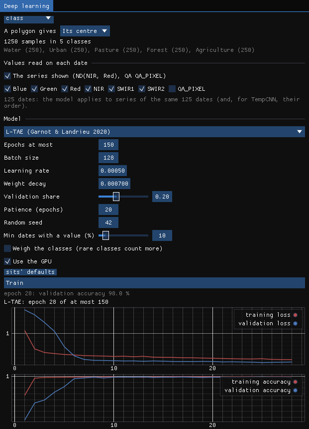
07U-TAE
U-TAE learns from patches where every pixel can be a label. Here the labels are MapBiomas' patches of the western half of the image as polygons (areas.gpkg, 433 polygons): every pixel of a polygon is a label, the others none, and the network learns to map the eastern half. To keep the guide's run short, only the labels inside an ROI (yellow) are used, in patches of 32 pixels.

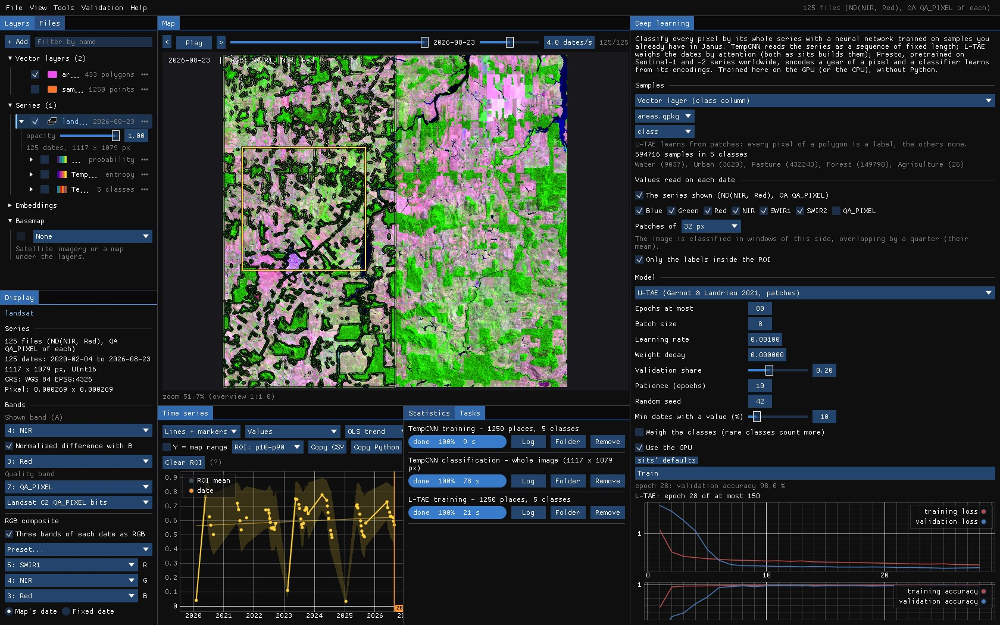

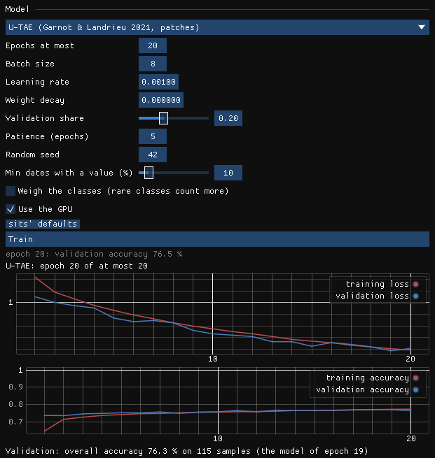
Its 576 patches (461 to train, 115 to validate) took 135 seconds an epoch, 45 minutes in all, and after 20 epochs U-TAE is right on 76.3% of the labelled pixels: about what calling everything pasture would give. The curves tell why: the losses are still falling at the last epoch. Its authors train it for 100 epochs; the window's default is 80, with a patience of 10. Stopped this early, a U-Net's decoder still draws a fine pattern of one class every other pixel (here, water over pasture), the mark of transposed convolutions that have not learnt yet; it goes as the training goes on.
Where U-TAE shines is a series of few dates and many labelled fields, the case it was made for (crops in France, a date a week or two for a season): there, its maps have whole fields with clean edges, where a pixel classifier leaves a speckle.
Memory
U-TAE keeps every date of a patch in the GPU's memory: with 125 dates, patches of 64 px take most of 12 GB and an epoch slows to a crawl. Use patches of 32 px, fewer dates (a monthly series), or the authors' weights: with a Sentinel-2 series of the ten bands of PASTIS, Start from the authors' PASTIS weights loads U-TAE as its authors trained it on French crops, only its last layer made for your classes.
08The model file
Every training is kept in a .janusmodel file (in the results folder; Save as... elsewhere): the network's weights and what it needs to be applied again: its inputs, the dates, how the values were scaled, the classes and their colours, and the training's history and validation. Open a model... applies it to another series of the same dates and bands, the next year's, or a neighbouring tile's.
09Post-processing
A class map made pixel by pixel has a speckle: single pixels of pasture in the forest, a pixel of water on a road. Above Apply, two options clean the map as it is written, the way Zeit (and R's sits) do it:
- Smooth the probabilities (Bayesian)
- sits' Bayesian smoothing (
sits_smooth, Zeit'ssmooth_probs): each class's probability is pulled towards those of its neighbours, the more where they agree. A pixel the network is sure of keeps its class; among uncertain pixels, the noise goes. The class is then the most probable one after smoothing. - Minimum mapping unit
- Patches of fewer pixels than this (8-connected) are merged into the neighbouring class with which they share the longest border (Zeit's
mmu_sieve). 0 is off; 11 Landsat pixels are about 1 ha.
| Setting | Default | What it does |
|---|---|---|
| Window | 9 px | The neighbourhood of the smoothing, odd (3 to 33). |
| Smoothness | 20 | The prior's variance: higher smooths more. |
| Neighbours | 0.5 | The fraction of the most probable neighbours whose mean is the prior. |
| Minimum mapping unit | 0 px | Patches smaller than this are merged into a neighbour. |
The defaults are sits'. With smoothing on, the probability layer is the smoothed one (Probability of the class (smoothed)); the uncertainty stays the network's own. The class map's name and the run's log say what was done. The smoothing is computed in bands of rows that overlap by half a window, which gives what the whole map at once would, without holding it in memory.
A map you already have
Tools → Post-processing (classes) cleans any categorical layer, one map or a map per date (a land cover series, a class map from another program), in three steps, each of which can be turned off:
| Parameter | Default | What it does |
|---|---|---|
| Temporal: longest excursion | 1 date | A run of up to this many dates of one class between two runs of another (forest, pasture, forest) takes that class (forest three times). Needs 3 dates or more; 0 is off. |
| Majority window | 3 px | Each pixel takes the most common class of the window (its own on a tie); 0 is off. |
| Majority iterations | 1 | How many times the majority filter runs; it stops early when nothing changes. |
| Minimum mapping unit | 6 px | Patches of fewer pixels are merged, the smallest first, into the neighbouring patch of the longest shared border. The map stays complete, as with GDAL's sieve. |
| Patches | 8-connected | Whether pixels that touch by a corner belong to one patch (8) or only by a side (4). |
A raster run writes the cleaned classes as a new layer with the original's class names and colours, and a map of how many dates of each pixel changed. On the chart, the tool shows the pixel's classes after the temporal step (the spatial steps need the neighbours, so only raster runs do them).
Against sits
Zeit's smoothing gives sits' probabilities to 1e-15. On 1000 × 1000 pixels of 4 classes, sits' smoothing takes 10.7 s and Zeit's 1.13 s on one thread.
10Area of applicability
The validation tells how well the model does on places like its samples. A pixel unlike every sample, a crop the samples never had or a cloud the mask missed, still gets a class, and the network can be sure of it. The area of applicability (Meyer & Pebesma 2021; Zeit's aoa, as R's CAST) marks where the inputs are close enough to the samples for the validation to hold.
- Dissimilarity index (DI)
- A pixel's distance to the nearest training sample, over the mean distance between the samples, on the values the network reads (each date's bands, gaps filled, scaled). The values all weigh the same: a network has no importance of its inputs to weigh them by.
- Threshold
- The samples' own DI, each to the nearest sample of another place (another polygon or pin, so that neighbouring pixels of one polygon do not vouch for each other), and the threshold the upper whisker of those: the 75% quantile plus 1.5 times the interquartile range.
- AOA
- The pixels whose DI is not above the threshold.
A TempCNN or L-TAE model keeps its samples' series in the model file, as the network read them: up to about a million values (a few MB), as many of each class as their share. Tick Area of applicability before Apply; its tooltip gives how many samples the model kept and its threshold. With it, the run writes two more maps, opened as layers:
| File | Map |
|---|---|
<stem>_di.tif | The dissimilarity index of each pixel (Float32), named with the threshold. |
<stem>_aoa.tif | The area of applicability (Byte): 1 inside (blue), 0 outside (red), 255 not classified; the classes are named in the file. |
<stem> is the run's name, the same as the class map's (tempcnn_class.tif and tempcnn_aoa.tif). Outside the AOA, the class is an extrapolation the validation says nothing about: add samples of what is there, or leave those pixels out of the area estimates. The uncertainty map and the AOA answer different questions: the first is the network's doubt between classes, the second whether the pixel resembles anything it learnt from.
Which models
Only TempCNN and L-TAE models trained by this version of Janus or later keep their samples. Older models, Presto's classifiers and U-TAE keep none; for them the tick is disabled, and its tooltip says why.
11What next
- Validate the map: the class map as the map of the Validation guide: strata, a sample, blind labels, accuracy and error-adjusted areas.
- Samples by object: SNIC's segments as polygons, a sample a segment.
- Your own labels: interpret points with Interpret... (labels 1–9), then train on the interpretation.
- A pretrained model: Presto's encodings, and a classifier on them.
12References
- Pelletier, C., Webb, G. I., Petitjean, F. (2019). Temporal convolutional neural network for the classification of satellite image time series. Remote Sensing, 11(5), 523.
- Garnot, V. S. F., Landrieu, L. (2020). Lightweight temporal self-attention for classifying satellite images time series. Advanced Analytics and Learning on Temporal Data (AALTD), LNCS 12588, 171–181.
- Garnot, V. S. F., Landrieu, L. (2021). Panoptic segmentation of satellite image time series with convolutional temporal attention networks. IEEE/CVF International Conference on Computer Vision (ICCV), 4872–4881.
- Simoes, R., Camara, G., Queiroz, G., Souza, F., Andrade, P. R., Santos, L., Carvalho, A., Ferreira, K. (2021). Satellite image time series analysis for big Earth observation data. Remote Sensing, 13(13), 2428. (sits)
- Souza, C. M., et al. (2020). Reconstructing three decades of land use and land cover changes in Brazilian biomes with Landsat archive and Earth Engine. Remote Sensing, 12(17), 2735. (MapBiomas)
- Burn: the deep learning framework in Rust behind the window.